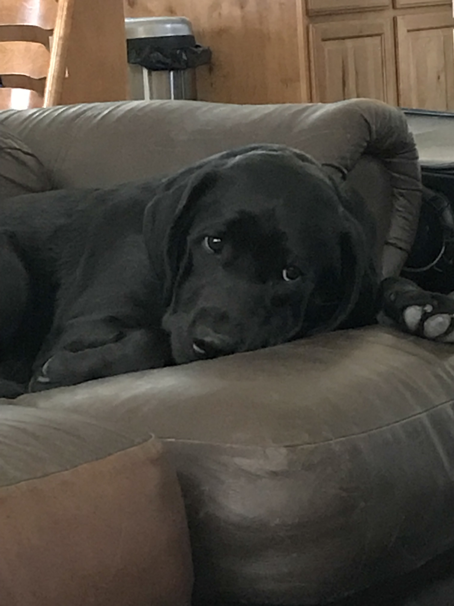
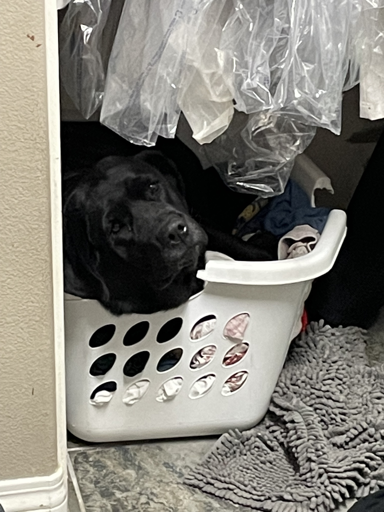
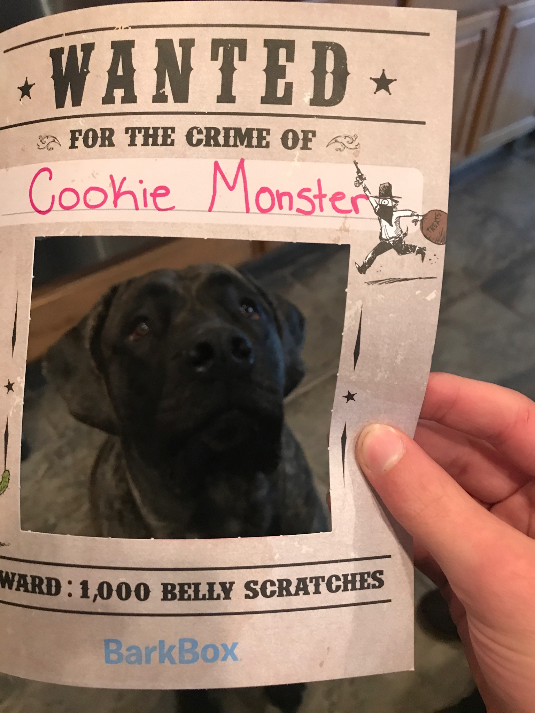

Fun Facts About Dogs

A dogs' nose print is unique, much like a person's fingerprint.

All dogs can dream, but puppies and senior dogs dream more often than adult dogs.

Yawning is contagious even for dogs.

There are over 75 million pet dogs in the U.S.-more than in any other country.